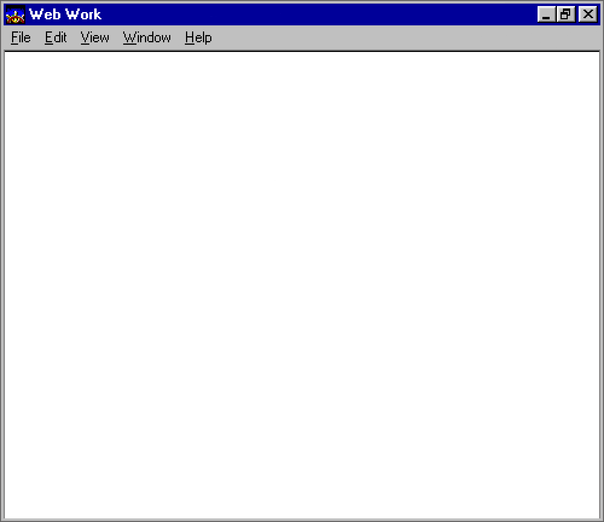

"The Whereback Machine" is a site that takes in either today's date or a user-chosen date and
displays a "this-day-in-time" page. Along with scraping Wikipedia for the event information,
the site also utilizes Google Maps' API to display the location of the event.
I opted to focus mostly on the design elements of the site, as this project was front-end-only
in addition to being our newly-formed group's first outing. I used HTML, CSS, and Photoshop to
get the basic design scaffolding in place and then built the date input form along with the JavaScript
needed to pass the user's chosen date to the bulk of the functionality. Being a one-size-fits-all
dropdown menu, the JS functionality checks for dates that don't exist. (February 29th is included
at no extra cost!)
Live Link | GitHub Source | Back